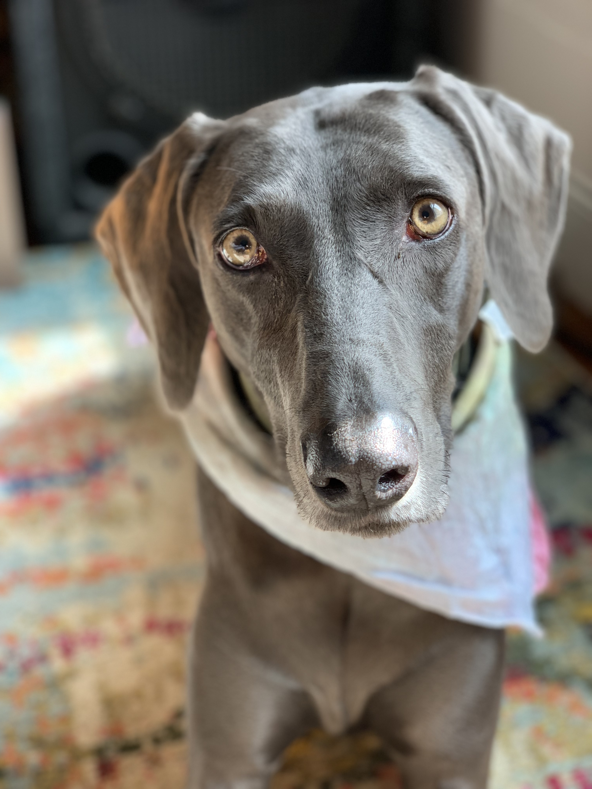

My name is Bayou and I am a dog but I think I am human.
I was born in eastern Oregon but have spent most of my life in California. I had the privilege of living in San Francisco for years and I didn't even pay rent.
I now live in Ann Arbor, Michigan and I hate it. The air is cold. The only thing keeping me alive is my heated blanket.
I love to eat trash but the others in my house lock the trash away from me. If I could, I would eat trash all day.
Please enjoy my site. I would also appreciate if you send me a boop.